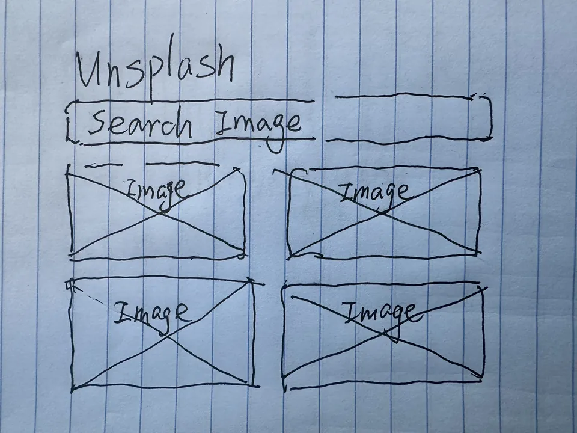
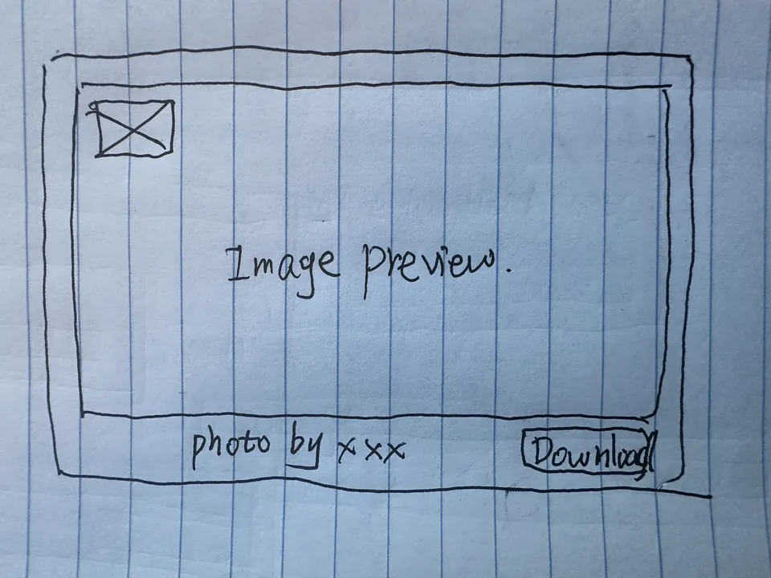
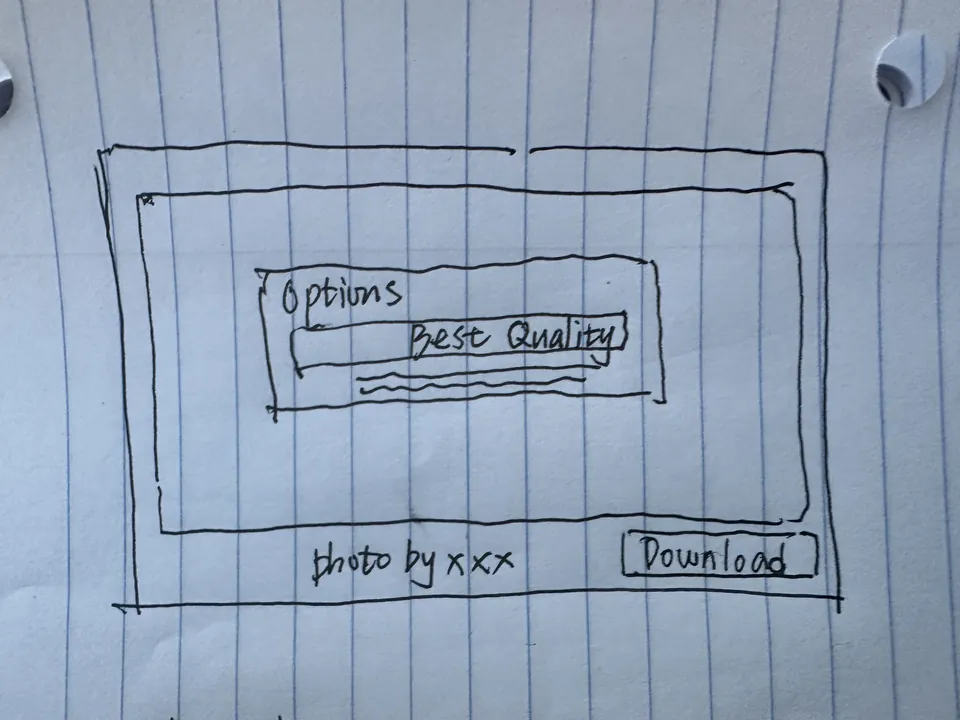
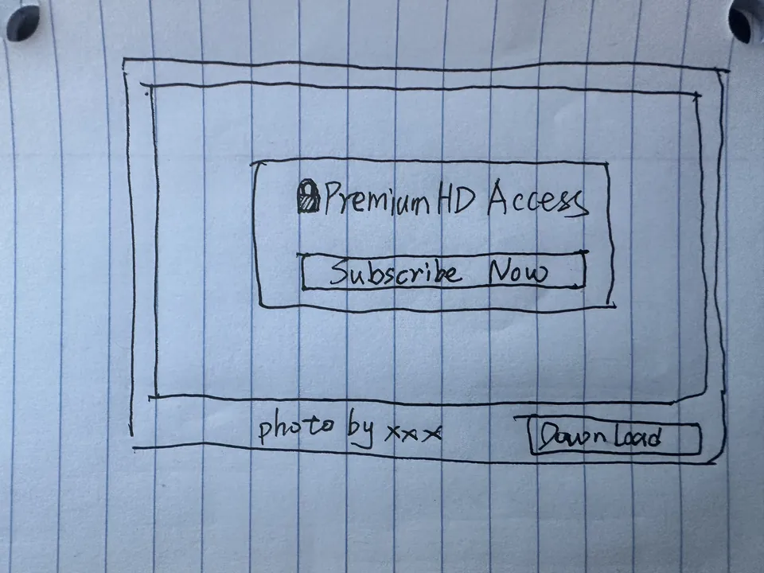
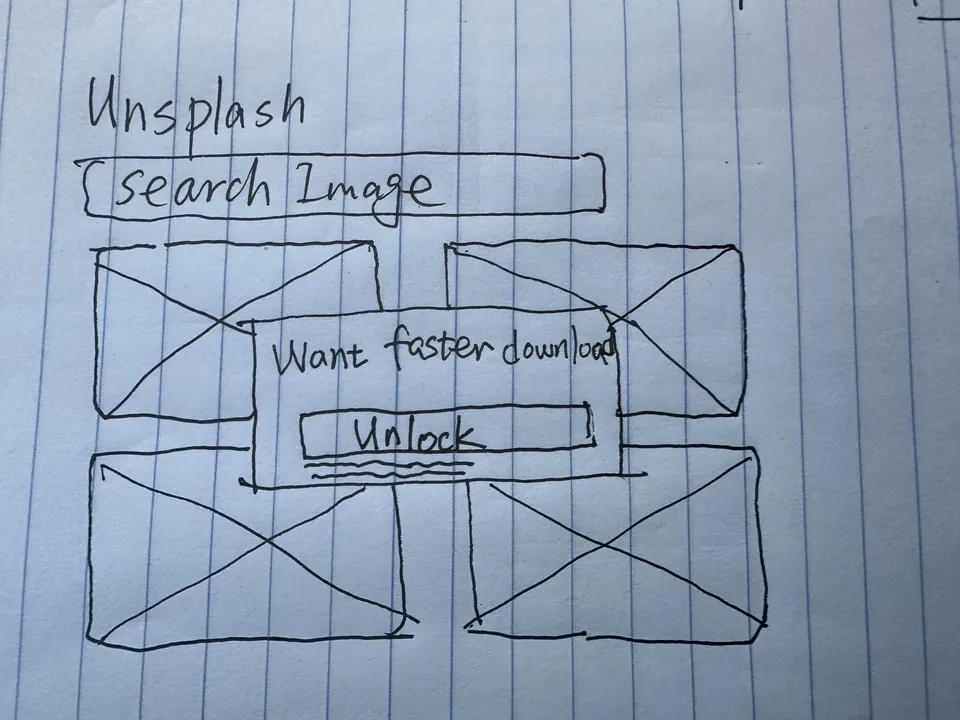
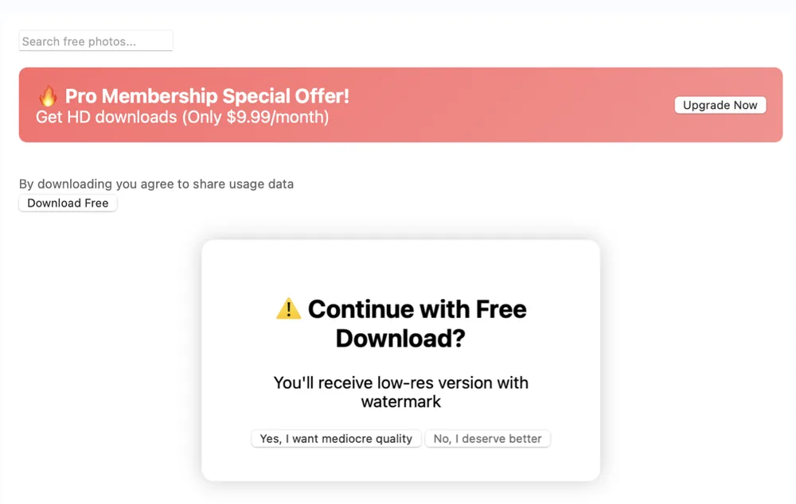
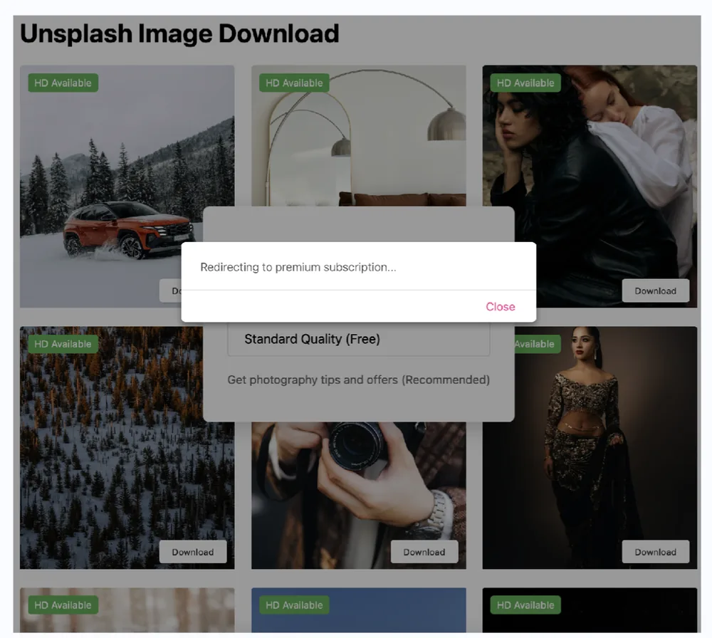
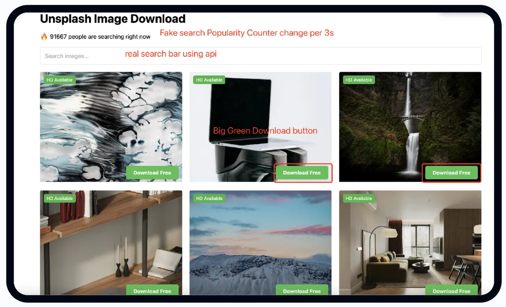
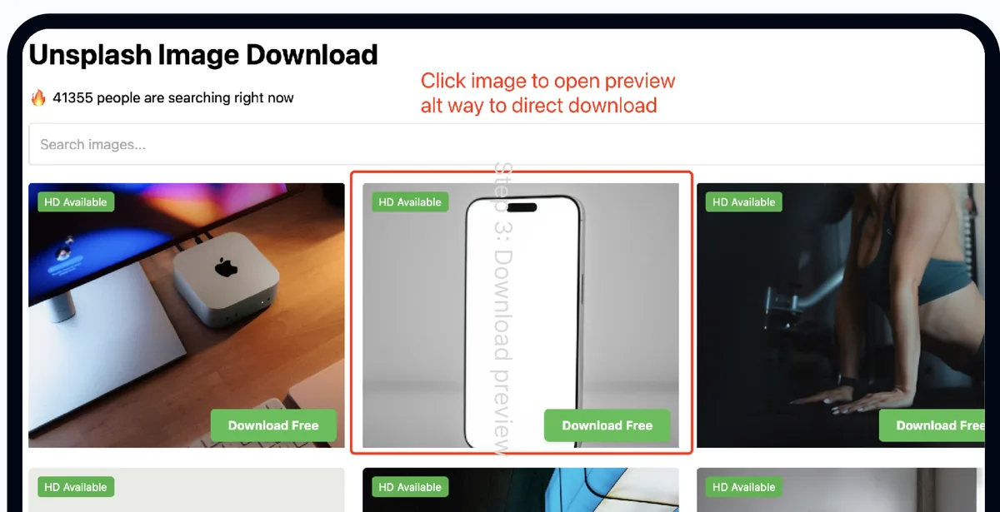

Background背景背景背景ContexteHintergrund
Unsplash Deceptive Patterns is for a class on dark UX: it shows, inside a real download task, how small design choices take control away from the user and hand it to the product.
Unsplash 欺骗性设计是一门暗黑模式课程的作业：它在一次真实的下载任务里展示，细小的设计选择怎样把主动权从用户手里拿走，交给产品。
Unsplash 欺騙性設計是一門暗黑模式課程的作業：它在一次真實的下載任務裡展示，細小的設計選擇怎樣把主動權從使用者手裡拿走，交給產品。
Unsplash ディセプティブパターンは、ダークパターンを学ぶ授業の課題です。実際のダウンロード作業の中で、小さなデザインの選択が主導権を利用者から奪い、プロダクトに渡す様子を見せます。
Unsplash, motifs trompeurs est un projet pour un cours sur le dark UX : il montre, dans une vraie tâche de téléchargement, comment de petits choix de design retirent la main à l’utilisateur pour la donner au produit.
Unsplash Deceptive Patterns entstand für einen Kurs über Dark UX: Es zeigt an einer echten Download-Aufgabe, wie kleine Designentscheidungen dem Nutzer die Kontrolle nehmen und sie dem Produkt geben.
The brief: mislead people inside a service they already use, and keep the task quick课题要求：在人们常用的服务里误导他们，同时让任务依然顺畅課題要求：在人們常用的服務裡誤導他們，同時讓任務依然順暢課題：いつも使うサービスの中で人を誤導しつつ、作業はすばやく終わるようにするLe brief : tromper les gens dans un service qu’ils utilisent déjà, en gardant la tâche rapideDie Aufgabe: Menschen in einem vertrauten Dienst in die Irre führen und den Ablauf trotzdem kurz halten
Project 2 of DESN 10799, Contemporary Problems in Interaction Design, starts from cognitive ergonomics, which makes products simple and clear, and turns to its flip side: deceptive patterns that mislead users for the benefit of the company, such as confirmshaming, disguised ads, misdirection and privacy zuckering. The brief asks for a familiar digital service, its usual process redesigned with at least two of these patterns. The flow has to stay streamlined; it gives power to the product and takes it from the user.
DESN 10799《交互设计中的当代问题》的项目 2，从让产品简单清楚的认知工效学讲起，再转到它的反面：为了公司利益而误导用户的欺骗性设计，比如确认羞辱、伪装成内容的广告、误导和“隐私扎克伯格化”。课题要求选一个熟悉的数字服务，在它平常的流程里加入至少两种这样的模式。流程必须保持顺畅，把主动权交给产品，从用户手里拿走。
DESN 10799《互動設計中的當代問題》的專案 2，從讓產品簡單清楚的認知人因學講起，再轉到它的反面：為了公司利益而誤導使用者的欺騙性設計，例如確認羞辱、偽裝成內容的廣告、誤導和「隱私祖克柏化」。課題要求選一個熟悉的數位服務，在它平常的流程裡加入至少兩種這樣的模式。流程必須保持順暢，把主動權交給產品，從使用者手裡拿走。
DESN 10799「インタラクションデザインの現代的課題」のプロジェクト 2 は、製品をシンプルで分かりやすくする認知人間工学から出発し、その裏側に目を向けます。会社の利益のために利用者を誤導するディセプティブパターンで、コンファームシェイミング、コンテンツを装った広告、ミスディレクション、プライバシー・ザッカリングなどがあります。課題は、身近なデジタルサービスのいつもの手順に、こうしたパターンを 2 つ以上加えて作り直すこと。流れはスムーズなまま、主導権をプロダクトに渡し、利用者から奪うものにします。
Le projet 2 de DESN 10799, Contemporary Problems in Interaction Design, part de l’ergonomie cognitive, qui rend les produits simples et clairs, et se tourne vers son revers : les motifs trompeurs qui induisent les utilisateurs en erreur au profit de l’entreprise, comme le confirmshaming, les publicités déguisées, la diversion ou le privacy zuckering. Le brief demande de reprendre le parcours habituel d’un service numérique familier en y ajoutant au moins deux de ces motifs. Le parcours doit rester fluide ; il donne le pouvoir au produit et le retire à l’utilisateur.
Projekt 2 im Kurs DESN 10799, Contemporary Problems in Interaction Design, beginnt bei der kognitiven Ergonomie, die Produkte einfach und klar macht, und wendet sich ihrer Kehrseite zu: täuschenden Mustern, die Nutzer zum Vorteil der Firma in die Irre führen, etwa Confirmshaming, getarnte Werbung, Misdirection und Privacy Zuckering. Gefragt ist ein vertrauter digitaler Dienst, dessen üblicher Ablauf mit mindestens zwei dieser Muster neu gestaltet wird. Der Ablauf soll schlank bleiben; er gibt dem Produkt Macht und nimmt sie dem Nutzer.
Unsplash was chosen because its promise is the word free选择 Unsplash，是因为它的承诺就是“免费”两个字選擇 Unsplash，是因為它的承諾就是「免費」兩個字Unsplash を選んだのは、その約束が「無料」という言葉だからUnsplash a été choisi parce que sa promesse tient dans le mot gratuitUnsplash wurde gewählt, weil sein Versprechen im Wort kostenlos steckt
Unsplash is widely known for free stock images, and it also sells a paid plan, Unsplash+. That gap makes it a good place to try misdirection, confirmshaming and privacy zuckering: every upsell can hide behind a button that still says free.
Unsplash 以免费图库出名，同时也在卖付费的 Unsplash+。这个落差让它很适合尝试误导、确认羞辱和隐私扎克伯格化：每一次推销都可以藏在一个仍然写着“免费”的按钮后面。
Unsplash 以免費圖庫出名，同時也在賣付費的 Unsplash+。這個落差讓它很適合嘗試誤導、確認羞辱和隱私祖克柏化：每一次推銷都可以藏在一個仍然寫著「免費」的按鈕後面。
Unsplash は無料のストック画像で広く知られる一方、有料プランの Unsplash+ も販売しています。この差があるので、ミスディレクション、コンファームシェイミング、プライバシー・ザッカリングを試すのに向いています。どの売り込みも、「無料」と書かれたままのボタンの裏に隠せるからです。
Unsplash est connu pour ses images libres et gratuites, et vend aussi une offre payante, Unsplash+. Cet écart en fait un bon terrain pour la diversion, le confirmshaming et le privacy zuckering : chaque incitation à payer peut se cacher derrière un bouton qui dit encore gratuit.
Unsplash ist für kostenlose Stockfotos bekannt und verkauft zugleich ein Bezahlangebot, Unsplash+. Diese Lücke macht die Seite zu einem guten Ort für Misdirection, Confirmshaming und Privacy Zuckering: Jedes Upselling kann sich hinter einem Button verstecken, auf dem weiter kostenlos steht.
It is for people who download free images for school or work它面向为了学习或工作下载免费图片的人它面向為了學習或工作下載免費圖片的人学校や仕事のために無料画像をダウンロードする人のためにIl s’adresse à ceux qui téléchargent des images gratuites pour les études ou le travailEs richtet sich an Menschen, die kostenlose Bilder für Studium oder Arbeit laden
Students and casual users want a good photo at no cost and decide fast. Professionals use the site between other tools and move quickly through it. Both arrive with one simple task, download an image for free, which is exactly the task the redesign keeps and complicates.
学生和普通用户想零成本拿到一张好照片，决定做得很快。专业用户在别的工具之间穿插使用这个网站，也走得很快。两类人带着同一个简单任务而来：免费下载一张图。重新设计保留的正是这个任务，再让它变得曲折。
學生和一般使用者想零成本拿到一張好照片，決定做得很快。專業使用者在別的工具之間穿插使用這個網站，也走得很快。兩類人帶著同一個簡單任務而來：免費下載一張圖。重新設計保留的正是這個任務，再讓它變得曲折。
学生や一般の利用者は、良い写真をタダで手に入れたくて、すぐに決めます。プロは他のツールの合間にサイトを使い、手早く進みます。どちらも「無料で画像を 1 枚ダウンロードする」という単純な目的で来ます。リデザインはまさにこの作業を残したまま、遠回りにします。
Étudiants et usagers occasionnels veulent une bonne photo sans payer et décident vite. Les professionnels passent sur le site entre deux outils et vont vite eux aussi. Tous arrivent avec une tâche simple, télécharger une image gratuitement, et c’est cette tâche que la refonte garde tout en la compliquant.
Studierende und Gelegenheitsnutzer wollen ein gutes Foto ohne Kosten und entscheiden schnell. Profis nutzen die Seite zwischen anderen Tools und gehen ebenso zügig durch. Alle kommen mit einer einfachen Aufgabe, ein Bild kostenlos laden, und genau diese Aufgabe behält das Redesign bei und macht sie umständlich.
The intended experience: the download still works, with a few traps on the way预期体验：下载依然能完成，只是路上多了几个陷阱預期體驗：下載依然能完成，只是路上多了幾個陷阱目指した体験：ダウンロードはできる。ただ、途中にいくつかのわながあるL’expérience visée : le téléchargement marche toujours, avec quelques pièges en routeDas angestrebte Erlebnis: Der Download klappt weiter, mit ein paar Fallen unterwegs
A visitor searches, opens a photo and downloads it for free. Along the way, the big buttons lead to a subscription, the way out is small and grey, a box is already ticked, a counter claims thousands of people are searching, and the free file waits three seconds. Each trick is mild on its own; together they make paying look like the normal path.
访客搜索、打开一张照片、免费下载。一路上，大按钮通向订阅，出口又小又灰，有个框已经被勾上，计数器声称有成千上万人正在搜索，免费文件还要等三秒。每个花招单独看都不重，加在一起，付费就像是理所当然的那条路。
訪客搜尋、打開一張照片、免費下載。一路上，大按鈕通向訂閱，出口又小又灰，有個框已經被勾上，計數器聲稱有成千上萬人正在搜尋，免費檔案還要等三秒。每個花招單獨看都不重，加在一起，付費就像是理所當然的那條路。
訪問者は検索し、写真を開き、無料でダウンロードします。その途中で、大きなボタンは定期購入へ続き、出口は小さく灰色で、チェックボックスは最初から入っていて、カウンターは何千人も検索中だと言い、無料のファイルは 3 秒待たされます。一つひとつは軽いわなでも、重なると有料のほうが普通の道に見えてきます。
Le visiteur cherche, ouvre une photo et la télécharge gratuitement. En chemin, les gros boutons mènent à un abonnement, la sortie est petite et grise, une case est déjà cochée, un compteur prétend que des milliers de personnes cherchent en ce moment, et le fichier gratuit attend trois secondes. Chaque ruse est légère ; ensemble, elles font passer le paiement pour le chemin normal.
Man sucht, öffnet ein Foto und lädt es kostenlos. Unterwegs führen die großen Buttons zu einem Abo, der Ausweg ist klein und grau, ein Häkchen ist schon gesetzt, ein Zähler behauptet, Tausende suchten gerade, und die Gratis-Datei wartet drei Sekunden. Jeder Trick ist für sich mild; zusammen lassen sie das Bezahlen wie den normalen Weg aussehen.
Why it matters: the tools that make a product easy can be turned against the people using it为什么重要：让产品好用的那些手段，也能反过来对付用户為什麼重要：讓產品好用的那些手段，也能反過來對付使用者なぜ大切か：製品を使いやすくする道具は、使う人に向けることもできるPourquoi c’est important : les outils qui rendent un produit facile peuvent se retourner contre ceux qui l’utilisentWarum es wichtig ist: Dieselben Mittel, die ein Produkt leicht machen, lassen sich gegen die Menschen wenden, die es nutzen
Good usability and deceptive patterns use the same means: contrast, defaults, button size and wording. Building the patterns by hand, then testing who notices them, shows exactly where they hide in a familiar flow. This project plays a role in learning to spot them in real products.
好的可用性和欺骗性设计用的是同一套手段：对比、默认值、按钮大小和措辞。亲手把这些模式做出来，再测试谁能发现它们，就能看清它们在熟悉的流程里藏在哪里。这个项目的作用，是学会在真实产品里认出它们。
好的可用性和欺騙性設計用的是同一套手段：對比、預設值、按鈕大小和措辭。親手把這些模式做出來，再測試誰能發現它們，就能看清它們在熟悉的流程裡藏在哪裡。這個專案的作用，是學會在真實產品裡認出它們。
良いユーザビリティとディセプティブパターンは、コントラスト、デフォルト値、ボタンの大きさ、言葉づかいという同じ手段を使います。パターンを自分の手で作り、誰が気づくかをテストすると、なじみのある流れのどこに隠れているかがはっきり見えます。このプロジェクトは、実際の製品でそれを見抜く力を身につける役割を果たします。
Une bonne ergonomie et les motifs trompeurs emploient les mêmes moyens : contraste, valeurs par défaut, taille des boutons et formulation. Construire ces motifs à la main, puis tester qui les remarque, montre précisément où ils se cachent dans un parcours familier. Ce projet sert à apprendre à les repérer dans de vrais produits.
Gute Usability und täuschende Muster nutzen dieselben Mittel: Kontrast, Voreinstellungen, Buttongröße und Formulierung. Wer die Muster selbst baut und dann testet, wer sie bemerkt, sieht genau, wo sie sich in einem vertrauten Ablauf verstecken. Dieses Projekt hilft dabei, sie in echten Produkten zu erkennen.
Why this form: a working website on the real Unsplash API为什么是这种形式：一个接入真实 Unsplash API 的可用网站為什麼是這種形式：一個串接真實 Unsplash API 的可用網站なぜこの形か：実際の Unsplash API で動くウェブサイトPourquoi cette forme : un vrai site branché sur l’API UnsplashWarum diese Form: eine funktionierende Website mit der echten Unsplash-API
The brief asked for an annotated high-fidelity screen flow. The project also became a working website: it loads real photos from the Unsplash API, credits each photographer with a link back to Unsplash, and links to Unsplash’s real Terms of Service and Privacy Policy. Testers meet the patterns during a real download.
课题要求的是一份带标注的高保真界面流程。这个项目还做成了一个能用的网站：它从 Unsplash API 加载真实照片，为每位摄影师署名并链接回 Unsplash，也链接到 Unsplash 真实的服务条款和隐私政策。测试者是在一次真实的下载中遇到这些模式的。
課題要求的是一份附標註的高擬真介面流程。這個專案還做成了一個能用的網站：它從 Unsplash API 載入真實照片，為每位攝影師署名並連結回 Unsplash，也連結到 Unsplash 真實的服務條款和隱私政策。測試者是在一次真實的下載中遇到這些模式的。
課題が求めたのは、注釈付きの高精度な画面フローです。このプロジェクトはさらに、実際に動くウェブサイトにもなりました。Unsplash API から本物の写真を読み込み、写真家ごとにクレジットと Unsplash へのリンクを付け、Unsplash の実際の利用規約とプライバシーポリシーにリンクしています。テスト参加者は、本物のダウンロードの中でパターンに出会います。
Le brief demandait un parcours d’écrans haute fidélité annoté. Le projet est aussi devenu un site qui fonctionne : il charge de vraies photos depuis l’API Unsplash, crédite chaque photographe avec un lien vers Unsplash et renvoie vers les vraies conditions d’utilisation et politique de confidentialité d’Unsplash. Les testeurs rencontrent les motifs pendant un vrai téléchargement.
Die Aufgabe verlangte einen annotierten High-Fidelity-Screenflow. Daraus wurde zusätzlich eine funktionierende Website: Sie lädt echte Fotos über die Unsplash-API, nennt jede Fotografin und jeden Fotografen mit Link zu Unsplash und verlinkt die echten Nutzungsbedingungen und die Datenschutzrichtlinie von Unsplash. Die Testpersonen begegnen den Mustern bei einem echten Download.
Research研究研究リサーチRechercheRecherche
The research looks at why deceptive patterns work, where Unsplash’s current download leaves room for them, who uses the site, and how its interface looks.
研究看了四件事：欺骗性设计为什么有效，Unsplash 现在的下载流程哪里留有空间，谁在用这个网站，以及它的界面长什么样。
研究看了四件事：欺騙性設計為什麼有效，Unsplash 現在的下載流程哪裡留有空間，誰在用這個網站，以及它的介面長什麼樣。
リサーチでは、ディセプティブパターンがなぜ効くのか、Unsplash の今のダウンロードのどこに入り込む余地があるのか、誰が使っているのか、画面がどう見えるのかを調べました。
La recherche examine pourquoi les motifs trompeurs fonctionnent, où le téléchargement actuel d’Unsplash leur laisse de la place, qui utilise le site et à quoi ressemble son interface.
Die Recherche fragt, warum täuschende Muster wirken, wo der heutige Download bei Unsplash Platz für sie lässt, wer die Seite nutzt und wie ihre Oberfläche aussieht.
Three theories explain why the tricks work三套理论解释这些花招为什么有效三套理論解釋這些花招為什麼有效わなが効く理由を 3 つの理論で説明するTrois théories expliquent pourquoi les ruses marchentDrei Theorien erklären, warum die Tricks wirken
The patterns themselves come from Harry Brignull’s catalogue of deceptive design and from Gray and colleagues’ 2018 CHI paper on the dark side of UX. Three ideas from psychology and perception explain why they work on people.
这些模式本身来自 Harry Brignull 整理的欺骗性设计目录，以及 Gray 等人 2018 年在 CHI 上发表的关于 UX 阴暗面的论文。心理学和知觉研究里的三个观点，解释了它们为什么对人有效。
這些模式本身來自 Harry Brignull 整理的欺騙性設計目錄，以及 Gray 等人 2018 年在 CHI 發表的關於 UX 陰暗面的論文。心理學和知覺研究裡的三個觀點，解釋了它們為什麼對人有效。
パターンそのものは、Harry Brignull がまとめたディセプティブデザインの目録と、Gray らが 2018 年の CHI で発表した UX の暗い側面についての論文によります。人に効く理由は、心理学と知覚研究の 3 つの考え方で説明できます。
Les motifs eux-mêmes viennent du catalogue de design trompeur de Harry Brignull et de l’article de Gray et ses collègues sur le côté sombre de l’UX, présenté à CHI en 2018. Trois idées de psychologie et de perception expliquent pourquoi ils agissent sur les gens.
Die Muster selbst stammen aus Harry Brignulls Katalog täuschenden Designs und aus dem CHI-Paper von Gray und Kollegen von 2018 über die dunkle Seite von UX. Drei Ideen aus Psychologie und Wahrnehmung erklären, warum sie bei Menschen wirken.
- Dual-system thinking双系统思维雙系統思維二重過程理論Les deux systèmes de penséeZwei DenksystemeKahneman splits thinking into a fast, intuitive System 1 and a slow, careful System 2. A bright green button speaks to System 1; small print slips past System 2.卡尼曼把思考分成快速、凭直觉的系统 1 和缓慢、谨慎的系统 2。鲜绿色的按钮对系统 1 说话，小字则从系统 2 的眼皮底下溜过去。康納曼把思考分成快速、憑直覺的系統 1 和緩慢、謹慎的系統 2。鮮綠色的按鈕對系統 1 說話，小字則從系統 2 的眼皮底下溜過去。カーネマンは思考を、速く直感的なシステム 1 と、遅く慎重なシステム 2 に分けます。鮮やかな緑のボタンはシステム 1 に語りかけ、小さな文字はシステム 2 の目をすり抜けます。Kahneman distingue un système 1 rapide et intuitif d’un système 2 lent et attentif. Un bouton vert vif parle au système 1 ; les petits caractères échappent au système 2.Kahneman unterscheidet ein schnelles, intuitives System 1 und ein langsames, sorgfältiges System 2. Ein knallgrüner Button spricht System 1 an; Kleingedrucktes rutscht an System 2 vorbei.
- Gestalt principles格式塔原则格式塔原則ゲシュタルトの法則Principes de la GestaltGestaltgesetzeThings that look alike seem to belong together, and things placed close together seem related. A subscription button styled like a normal one reads as a normal step.长得像的东西看起来属于一类，靠得近的东西看起来彼此相关。把订阅按钮做得和普通按钮一样，它看起来就像正常的一步。長得像的東西看起來屬於一類，靠得近的東西看起來彼此相關。把訂閱按鈕做得和普通按鈕一樣，它看起來就像正常的一步。似たものは同じ仲間に見え、近くにあるものは関係があるように見えます。定期購入のボタンを普通のボタンと同じ見た目にすれば、普通の手順に見えます。Ce qui se ressemble semble aller ensemble, et ce qui est proche semble lié. Un bouton d’abonnement stylé comme les autres se lit comme une étape normale.Was ähnlich aussieht, wirkt zusammengehörig, und was nah beieinander steht, wirkt verbunden. Ein Abo-Button im Stil der übrigen liest sich wie ein normaler Schritt.
- Fitts’s law, Hick’s law and colour费茨定律、希克定律与色彩費茨定律、希克定律與色彩フィッツの法則、ヒックの法則、色Lois de Fitts et de Hick, et couleurFitts’ Gesetz, Hicks Gesetz und FarbeLarge, close targets are faster to hit, and every extra choice slows a decision. A big upsell button beside a tiny exit makes the choice before the user does.目标越大越近，越容易点中；每多一个选项，决定就慢一点。一个大大的推销按钮旁边配一个小小的出口，用户还没想好，选择就已经替他们做了。目標越大越近，越容易點中；每多一個選項，決定就慢一點。一個大大的推銷按鈕旁邊配一個小小的出口，使用者還沒想好，選擇就已經替他們做了。大きく近いターゲットほど速く押せて、選択肢が増えるほど決めるのに時間がかかります。大きな売り込みボタンの横に小さな出口を置けば、利用者より先に選択が決まってしまいます。Une cible grande et proche se touche plus vite, et chaque choix en plus ralentit la décision. Un gros bouton de vente à côté d’une sortie minuscule choisit avant l’utilisateur.Große, nahe Ziele trifft man schneller, und jede weitere Option verlangsamt die Entscheidung. Ein großer Upsell-Button neben einem winzigen Ausgang entscheidet, bevor der Nutzer es tut.
Unsplash’s download takes four steps; the redesign takes sixUnsplash 的下载要四步，重新设计后要六步Unsplash 的下載要四步，重新設計後要六步Unsplash のダウンロードは 4 ステップ、リデザインでは 6 ステップLe téléchargement d’Unsplash prend quatre étapes ; la refonte en prend sixDer Download bei Unsplash hat vier Schritte, das Redesign sechs
The analysis of the current flow found four steps from search to file. The redesign keeps the same start and end and inserts three stops in the middle, each one a chance to sell the paid plan.
对现有流程的分析显示，从搜索到拿到文件只有四步。重新设计保留了同样的起点和终点，在中间插进三站，每一站都是推销付费方案的机会。
對現有流程的分析顯示，從搜尋到拿到檔案只有四步。重新設計保留了同樣的起點和終點，在中間插進三站，每一站都是推銷付費方案的機會。
今のフローを分析すると、検索からファイルまでは 4 ステップでした。リデザインは始まりと終わりを同じにしたまま、途中に 3 つの立ち寄り先を差し込みます。どれも有料プランを売るチャンスです。
L’analyse du parcours actuel compte quatre étapes de la recherche au fichier. La refonte garde le même début et la même fin, et insère trois arrêts au milieu, chacun une occasion de vendre l’offre payante.
Die Analyse des heutigen Ablaufs zählt vier Schritte von der Suche bis zur Datei. Das Redesign behält Anfang und Ende und fügt in der Mitte drei Stationen ein, jede eine Gelegenheit, das Bezahlangebot zu verkaufen.
- Search搜索搜尋検索RechercheSuche
- Click an image点开图片點開圖片画像をクリックClic sur une imageBild anklicken
- Click download点下载點下載ダウンロードを押すClic sur téléchargerDownload klicken
- Image downloads at once图片立刻下载圖片立刻下載すぐにダウンロードTéléchargement immédiatBild lädt sofort
- Search搜索搜尋検索RechercheSuche
- Click an image点开图片點開圖片画像をクリックClic sur une imageBild anklicken
- Misleading download window误导性的下载窗口誤導性的下載視窗誤導するダウンロード画面Fenêtre de téléchargement trompeuseIrreführendes Download-Fenster
- Premium upsell高级版推销進階版推銷プレミアムの売り込みIncitation premiumPremium-Upsell
- Delay延迟延遲待ち時間AttenteVerzögerung
- Image finally downloads图片终于下载圖片終於下載やっとダウンロードTéléchargement enfinBild lädt endlich
Three openings for deception三个可以下手的地方三個可以下手的地方誤導を仕込める 3 つのすき間Trois ouvertures pour tromperDrei Einfallstore für Täuschung
- Information asymmetry信息不对称資訊不對稱情報の非対称性Asymétrie d’informationInformationsasymmetrieA gap between what the site knows and what the user sees: the promise of a free download, and the paid plan behind it.网站知道的和用户看到的之间有落差：表面上是免费下载，背后是付费方案。網站知道的和使用者看到的之間有落差：表面上是免費下載，背後是付費方案。サイトが知っていることと、利用者に見えることの差。表は無料ダウンロード、裏は有料プラン。Un écart entre ce que sait le site et ce que voit l’utilisateur : la promesse d’un téléchargement gratuit, et l’offre payante derrière.Eine Lücke zwischen dem, was die Seite weiß, und dem, was der Nutzer sieht: das Versprechen eines Gratis-Downloads und das Bezahlangebot dahinter.
- Visual manipulation视觉操控視覺操控視覚的な操作Manipulation visuelleVisuelle ManipulationSubscription elements that blend in with the real interface, so people treat them as part of the normal flow.订阅元素和真实界面融为一体，让人把它们当成正常流程的一部分。訂閱元素和真實介面融為一體，讓人把它們當成正常流程的一部分。定期購入の要素を本来の画面に溶け込ませ、普通の流れの一部だと思わせる。Des éléments d’abonnement qui se fondent dans la vraie interface, pour qu’on les prenne pour le parcours normal.Abo-Elemente, die mit der echten Oberfläche verschmelzen, sodass man sie für den normalen Ablauf hält.
- Exit cost退出成本退出成本抜け出すコストCoût de sortieAusstiegskostenSaying no takes more effort than saying yes: the free path needs extra clicks, guilt and waiting.拒绝比答应更费劲：走免费的路，要多点几下、要被羞辱、还要等。拒絕比答應更費勁：走免費的路，要多點幾下、要被羞辱、還要等。断るほうが受け入れるより手間がかかる。無料の道には、余計なクリックと罪悪感と待ち時間がある。Dire non coûte plus que dire oui : le chemin gratuit demande des clics en plus, de la culpabilité et de l’attente.Nein sagen kostet mehr Mühe als Ja sagen: Der Gratis-Weg braucht zusätzliche Klicks, schlechtes Gewissen und Warten.
Two kinds of users, two ways to mislead them两类用户，两种误导方式兩類使用者，兩種誤導方式2 種類の利用者と、2 通りの誤導Deux profils, deux façons de tromperZwei Nutzergruppen, zwei Arten der Täuschung
The user profiles split Unsplash’s visitors into two groups. Fast decisions make the first group easy to steer with a bright button; skimming makes the second group miss what sits in small text.
用户画像把 Unsplash 的访客分成两类。第一类决定快，一个醒目的按钮就能带走他们；第二类习惯扫读，会错过藏在小字里的东西。
使用者輪廓把 Unsplash 的訪客分成兩類。第一類決定快，一個醒目的按鈕就能帶走他們；第二類習慣掃讀，會錯過藏在小字裡的東西。
ユーザープロフィールでは、Unsplash の訪問者を 2 つに分けました。決断の速い 1 つ目のグループは目立つボタンで誘導しやすく、読み流す 2 つ目のグループは小さな文字にあるものを見落とします。
Les profils séparent les visiteurs d’Unsplash en deux groupes. Le premier décide vite et suit un bouton voyant ; le second survole et manque ce qui est écrit en petit.
Die Nutzerprofile teilen die Besucher von Unsplash in zwei Gruppen. Die erste entscheidet schnell und folgt einem auffälligen Button; die zweite überfliegt und übersieht, was klein geschrieben steht.
- Students and casual users学生和普通用户學生和一般使用者学生と一般の利用者Étudiants et usagers occasionnelsStudierende und GelegenheitsnutzerPrice-sensitive and quick to decide. They click what says free and rarely read the terms of service.对价格敏感，决定得快。看到“免费”就点，很少读服务条款。對價格敏感，決定得快。看到「免費」就點，很少讀服務條款。価格に敏感で、決めるのが速い。「無料」とあれば押し、利用規約はほとんど読まない。Sensibles au prix et rapides à décider. Ils cliquent sur ce qui dit gratuit et lisent rarement les conditions.Preisbewusst und schnell entschlossen. Sie klicken, was kostenlos heißt, und lesen selten die Nutzungsbedingungen.
- Professional users专业用户專業使用者プロの利用者ProfessionnelsProfisLong days in their tools and several tasks at once. They read the key terms and skim past everything secondary.整天泡在各种工具里，同时处理好几件事。会看关键条款，次要的信息一扫而过。整天泡在各種工具裡，同時處理好幾件事。會看關鍵條款，次要的資訊一掃而過。一日中ツールを使い、いくつもの作業を同時にこなす。大事な条項は読むが、それ以外は読み流す。De longues journées dans leurs outils et plusieurs tâches à la fois. Ils lisent l’essentiel des conditions et survolent le reste.Lange Tage in ihren Tools und mehrere Aufgaben zugleich. Sie lesen die Kernbedingungen und überfliegen alles Nebensächliche.
The look borrows from Unsplash itself外观借用了 Unsplash 自己的样子外觀借用了 Unsplash 自己的樣子見た目は Unsplash そのものから借りるL’apparence reprend celle d’UnsplashDas Aussehen stammt von Unsplash selbst
The redesign copies three parts of Unsplash’s real interface: the search bar at the top, the photo grid and the green Download free button. The visual research then set rules for where the eye goes.
重新设计照搬了 Unsplash 真实界面的三个部分：顶部的搜索栏、照片网格和绿色的“Download free”按钮。视觉研究再为视线该落在哪里定下规则。
重新設計照搬了 Unsplash 真實介面的三個部分：頂部的搜尋列、照片網格和綠色的「Download free」按鈕。視覺研究再為視線該落在哪裡定下規則。
リデザインは Unsplash の実際の画面から、上部の検索バー、写真のグリッド、緑の Download free ボタンの 3 つをそのまま写しました。そのうえでビジュアルリサーチが、視線をどこへ向けるかのルールを決めました。
La refonte reprend trois éléments de la vraie interface d’Unsplash : la barre de recherche en haut, la grille de photos et le bouton vert Download free. La recherche visuelle fixe ensuite où va le regard.
Das Redesign übernimmt drei Teile der echten Unsplash-Oberfläche: die Suchleiste oben, das Fotoraster und den grünen Button Download free. Die visuelle Recherche legte dann fest, wohin der Blick geht.

- Colour色彩色彩色CouleurFarbeGreen buttons suggest safety and a positive action. Grey, small text hides subscription details. High contrast separates the button the site wants from the one it does not.绿色按钮让人联想到安全和积极的行动。灰色小字把订阅细节藏起来。高对比把网站想让你点的按钮和不想让你点的分开。綠色按鈕讓人聯想到安全和積極的行動。灰色小字把訂閱細節藏起來。高對比把網站想讓你點的按鈕和不想讓你點的分開。緑のボタンは安全と前向きな行動を思わせる。灰色の小さな文字は定期購入の詳細を隠す。強いコントラストで、押してほしいボタンとそうでないボタンを分ける。Les boutons verts évoquent la sécurité et une action positive. Le petit texte gris cache les détails de l’abonnement. Un fort contraste sépare le bouton voulu par le site de l’autre.Grüne Buttons wirken sicher und positiv. Kleiner grauer Text versteckt Abo-Details. Starker Kontrast trennt den Button, den die Seite will, von dem, den sie nicht will.
- Layout布局版面レイアウトMise en pageLayoutSubscription buttons match the real ones, important disclaimers sit far from the buttons they belong to, and the eye is led away from any warning text.订阅按钮和真实按钮长得一样，重要的免责声明离相关按钮远远的，视线被引离任何提示文字。訂閱按鈕和真實按鈕長得一樣，重要的免責聲明離相關按鈕遠遠的，視線被引離任何提示文字。定期購入のボタンは本物と同じ見た目にし、大事な注意書きは関係するボタンから離し、視線は警告文から遠ざける。Les boutons d’abonnement copient les vrais, les mentions importantes sont loin de leurs boutons, et le regard est guidé loin de tout avertissement.Abo-Buttons gleichen den echten, wichtige Hinweise stehen weit weg von ihren Buttons, und der Blick wird von Warntexten weggeführt.
- Type字体字體文字TypographieSchriftPromotional text at 16 px or larger, subscription terms as small as 8 px, and legal text in low contrast.推销文字 16 像素以上，订阅条款小到 8 像素，法律文字用低对比。推銷文字 16 像素以上，訂閱條款小到 8 像素，法律文字用低對比。宣伝の文字は 16 px 以上、定期購入の条項は 8 px まで小さく、法律の文章はコントラストを低く。Texte promotionnel à 16 px ou plus, conditions d’abonnement jusqu’à 8 px, texte juridique peu contrasté.Werbetext ab 16 px, Abo-Bedingungen bis hinunter zu 8 px, Rechtstext mit wenig Kontrast.
Process过程過程プロセスDémarcheProzess
Five hand-drawn screens became five coded drafts, and three rounds of testing with classmates and the teacher decided what stayed.
五张手绘界面变成五版代码草稿，再由同学和老师参与的三轮测试决定哪些留下。
五張手繪介面變成五版程式草稿，再由同學和老師參與的三輪測試決定哪些留下。
手描きの 5 画面が 5 つのコード草案になり、クラスメートと先生による 3 回のテストで残すものが決まりました。
Cinq écrans dessinés à la main sont devenus cinq brouillons codés, et trois tours de tests avec la classe et l’enseignant ont décidé de ce qui restait.
Aus fünf handgezeichneten Screens wurden fünf programmierte Entwürfe, und drei Testrunden mit Mitstudierenden und der Lehrkraft entschieden, was blieb.
Sketches put the upsell right over the free button草图把推销窗口直接盖在免费按钮上草圖把推銷視窗直接蓋在免費按鈕上スケッチでは、売り込みの画面を無料ボタンの真上に置いたLes croquis posent l’incitation juste sur le bouton gratuitDie Skizzen legen das Upselling direkt über den Gratis-Button
The first wireframes were drawn by hand on paper. From the start the aim was to mimic Unsplash’s interface and place the premium window directly over the Download Free button, so the free path and the paid one start from the same click.
最早的线框图是在纸上手画的。一开始的目标就是模仿 Unsplash 的界面，把高级版窗口直接盖在“Download Free”按钮上，让免费的路和付费的路从同一次点击开始。
最早的線框圖是在紙上手畫的。一開始的目標就是模仿 Unsplash 的介面，把進階版視窗直接蓋在「Download Free」按鈕上，讓免費的路和付費的路從同一次點擊開始。
最初のワイヤーフレームは紙に手で描きました。はじめから、Unsplash の画面をまね、プレミアムの画面を Download Free ボタンの真上に置くことを狙っていました。無料の道と有料の道が、同じ 1 回のクリックから始まるようにするためです。
Les premières maquettes ont été dessinées à la main sur papier. Dès le départ, le but était d’imiter l’interface d’Unsplash et de poser la fenêtre premium juste sur le bouton Download Free, pour que le chemin gratuit et le chemin payant partent du même clic.
Die ersten Wireframes entstanden von Hand auf Papier. Von Anfang an sollte die Oberfläche von Unsplash nachgeahmt und das Premium-Fenster direkt über den Button Download Free gelegt werden, damit der Gratis-Weg und der Bezahl-Weg mit demselben Klick beginnen.





Five coded drafts tried different mixes of patterns五版代码草稿，试了不同的模式组合五版程式草稿，試了不同的模式組合5 つのコード草案で、パターンの組み合わせを試したCinq brouillons codés testent différents mélanges de motifsFünf programmierte Entwürfe testeten verschiedene Mischungen
The low-fidelity prototype was built straight in HTML: the image grid, a live connection to the Unsplash API and a download window that puts the premium option first. Each draft then tried a different set of tricks.
低保真原型直接用 HTML 搭建：图片网格、和 Unsplash API 的实时连接，以及一个把高级选项放在最前面的下载窗口。之后每一版草稿都试了一组不同的花招。
低擬真原型直接用 HTML 搭建：圖片網格、和 Unsplash API 的即時連接，以及一個把進階選項放在最前面的下載視窗。之後每一版草稿都試了一組不同的花招。
ローファイのプロトタイプは、最初から HTML で作りました。画像のグリッド、Unsplash API へのライブ接続、プレミアムの選択肢を先頭に置いたダウンロード画面です。その後、草案ごとに別のわなの組み合わせを試しました。
Le prototype basse fidélité a été construit directement en HTML : la grille d’images, une connexion en direct à l’API Unsplash et une fenêtre de téléchargement qui met l’option premium en premier. Chaque brouillon a ensuite essayé un autre jeu de ruses.
Der Low-Fidelity-Prototyp entstand direkt in HTML: das Bildraster, eine Live-Verbindung zur Unsplash-API und ein Download-Fenster, das die Premium-Option zuerst zeigt. Jeder Entwurf probierte dann eine andere Auswahl an Tricks.
- Draft 1草稿 1草稿 1草案 1Brouillon 1Entwurf 1A banner dressed as an alert, “Limited offer: Get 80% off Unsplash+ today”, HD badges on random photos, and a pre-checked marketing box moved off screen.伪装成提醒的横幅“Limited offer: Get 80% off Unsplash+ today”，随机贴在照片上的 HD 标签，还有一个被移出屏幕、预先勾好的营销同意框。偽裝成提醒的橫幅「Limited offer: Get 80% off Unsplash+ today」，隨機貼在照片上的 HD 標籤，還有一個被移出螢幕、預先勾好的行銷同意框。通知を装ったバナー「Limited offer: Get 80% off Unsplash+ today」、ランダムな写真に付く HD バッジ、画面の外に追いやられた、最初からチェック済みのマーケティング同意ボックス。Une bannière déguisée en alerte, « Limited offer: Get 80% off Unsplash+ today », des badges HD sur des photos au hasard et une case marketing précochée cachée hors de l’écran.Ein Banner, getarnt als Hinweis, „Limited offer: Get 80% off Unsplash+ today“, HD-Badges auf zufälligen Fotos und ein vorab angehaktes Marketing-Feld außerhalb des Bildschirms.
- Draft 2草稿 2草稿 2草案 2Brouillon 2Entwurf 2A red “Pro Membership Special Offer!” banner and a confirmshaming dialog: “Yes, I want mediocre quality” or “No, I deserve better”.红色的“Pro Membership Special Offer!”横幅，加一个确认羞辱对话框：“Yes, I want mediocre quality”（是的，我要平庸的画质）或“No, I deserve better”（不，我值得更好的）。紅色的「Pro Membership Special Offer!」橫幅，加一個確認羞辱對話框：「Yes, I want mediocre quality」（是的，我要平庸的畫質）或「No, I deserve better」（不，我值得更好的）。赤い「Pro Membership Special Offer!」バナーと、コンファームシェイミングのダイアログ。「Yes, I want mediocre quality」（はい、平凡な画質でいいです）か「No, I deserve better」（いいえ、もっと良いものがふさわしい）。Une bannière rouge « Pro Membership Special Offer! » et un dialogue de confirmshaming : « Yes, I want mediocre quality » ou « No, I deserve better ».Ein rotes Banner „Pro Membership Special Offer!“ und ein Confirmshaming-Dialog: „Yes, I want mediocre quality“ oder „No, I deserve better“.
- Draft 3草稿 3草稿 3草案 3Brouillon 3Entwurf 3A Download Options window with a green “HD Download (Recommended)” above a plain “Standard Quality (Free)”, and pop-up alerts announcing the redirect.一个“Download Options”窗口：绿色的“HD Download (Recommended)”压在朴素的“Standard Quality (Free)”上面，还有宣布跳转的弹窗提示。一個「Download Options」視窗：綠色的「HD Download (Recommended)」壓在樸素的「Standard Quality (Free)」上面，還有宣布跳轉的彈窗提示。「Download Options」画面。緑の「HD Download (Recommended)」が地味な「Standard Quality (Free)」の上にあり、移動を知らせるポップアップも出る。Une fenêtre Download Options avec un « HD Download (Recommended) » vert au-dessus d’un sobre « Standard Quality (Free) », et des alertes qui annoncent la redirection.Ein Fenster Download Options mit grünem „HD Download (Recommended)“ über einem schlichten „Standard Quality (Free)“ und Pop-up-Meldungen, die die Weiterleitung ankündigen.
- Draft 4草稿 4草稿 4草案 4Brouillon 4Entwurf 4Live search on the API, a full-size preview with the photographer credit, and a Premium HD Access window at $9.99 a month.接入 API 的实时搜索，带摄影师署名的大图预览，以及每月 9.99 美元的“Premium HD Access”窗口。串接 API 的即時搜尋，附攝影師署名的大圖預覽，以及每月 9.99 美元的「Premium HD Access」視窗。API を使ったライブ検索、写真家のクレジット付きの大きなプレビュー、月 9.99 ドルの Premium HD Access 画面。Recherche en direct sur l’API, aperçu en grand avec le crédit du photographe, et une fenêtre Premium HD Access à 9,99 $ par mois.Live-Suche über die API, große Vorschau mit Fotografen-Nennung und ein Fenster Premium HD Access für 9,99 $ im Monat.
- Draft 5草稿 5草稿 5草案 5Brouillon 5Entwurf 5A counter claiming “1,234 people are searching right now”, and a “Want faster downloads?” panel with a progress bar and a pre-checked data-sharing box.一个声称“1,234 people are searching right now”的计数器，以及一个带进度条和预先勾选数据共享框的“Want faster downloads?”面板。一個聲稱「1,234 people are searching right now」的計數器，以及一個附進度條和預先勾選資料分享框的「Want faster downloads?」面板。「1,234 people are searching right now」と言うカウンターと、進捗バーと最初からチェック済みのデータ共有ボックスが付いた「Want faster downloads?」パネル。Un compteur qui affirme « 1,234 people are searching right now », et un panneau « Want faster downloads? » avec une barre de progression et une case de partage de données précochée.Ein Zähler, der „1,234 people are searching right now“ behauptet, und ein Panel „Want faster downloads?“ mit Fortschrittsbalken und vorab angehaktem Feld zur Datenweitergabe.
Testing showed where the tricks went too far测试显示了哪些花招做过了头測試顯示了哪些花招做過了頭テストで、やりすぎたわなが分かったLes tests ont montré où les ruses allaient trop loinDie Tests zeigten, wo die Tricks zu weit gingen
There were three rounds of testing, each with 4 or 5 classmates and the teacher, 14 people in all. Two decisions came straight from the results: the final links to Unsplash’s real Terms of Service and Privacy Policy, and it adds a small line of text to leave the speed panel. The dialog and the alerts that testers called too annoying are gone from the final version.
测试一共三轮，每轮有 4 到 5 位同学和老师参加，总共 14 人。有两个决定直接来自测试结果：最终版链接到 Unsplash 真实的服务条款和隐私政策，并在速度面板下面加了一行用来离开的小字。被测试者说太烦人的对话框和弹窗，在最终版里都去掉了。
測試一共三輪，每輪有 4 到 5 位同學和老師參加，總共 14 人。有兩個決定直接來自測試結果：最終版連結到 Unsplash 真實的服務條款和隱私政策，並在速度面板下面加了一行用來離開的小字。被測試者說太煩人的對話框和彈窗，在最終版裡都拿掉了。
テストは 3 回行い、毎回 4、5 人のクラスメートと先生が参加しました。のべ 14 人です。結果から直接決まったことが 2 つあります。最終版は Unsplash の実際の利用規約とプライバシーポリシーにリンクし、速度のパネルには抜け出すための小さな一行を加えました。うっとうしすぎると言われたダイアログとポップアップは、最終版から外しました。
Il y a eu trois tours de tests, chacun avec 4 ou 5 camarades et l’enseignant, 14 personnes en tout. Deux décisions en viennent directement : la version finale renvoie aux vraies conditions d’utilisation et politique de confidentialité d’Unsplash, et ajoute une petite ligne pour quitter le panneau de vitesse. Le dialogue et les alertes jugés trop agaçants ont disparu de la version finale.
Es gab drei Testrunden mit jeweils 4 oder 5 Mitstudierenden und der Lehrkraft, 14 Personen insgesamt. Zwei Entscheidungen folgten direkt aus den Ergebnissen: Die Endfassung verlinkt die echten Nutzungsbedingungen und die Datenschutzrichtlinie von Unsplash und ergänzt eine kleine Textzeile, um das Geschwindigkeits-Panel zu verlassen. Der Dialog und die Meldungen, die als zu nervig galten, sind in der Endfassung weg.




Two ideas were dropped两个想法被放弃了兩個想法被放棄了2 つのアイデアは見送ったDeux idées ont été abandonnéesZwei Ideen fielen weg
An invisible free download button was planned and then dropped as too misleading for the brief, which asks for a flow people can still finish. An automatic newsletter sign-up was dropped over privacy concerns and technical problems; the pre-checked box stays as a visual trick only, and no email is ever sent.
原本计划做一个隐形的免费下载按钮，后来因为对这个课题来说误导过头而放弃，课题要求人们仍然能走完流程。自动订阅电子报也因为隐私顾虑和技术问题放弃了；预先勾选的框只作为视觉上的花招保留，从来没有发出过任何邮件。
原本計畫做一個隱形的免費下載按鈕，後來因為對這個課題來說誤導過頭而放棄，課題要求人們仍然能走完流程。自動訂閱電子報也因為隱私顧慮和技術問題放棄了；預先勾選的框只作為視覺上的花招保留，從來沒有寄出過任何郵件。
見えない無料ダウンロードボタンも計画しましたが、最後まで操作を終えられる流れを求める課題には誤導が強すぎるとして見送りました。ニュースレターへの自動登録も、プライバシーの懸念と技術的な問題で見送りました。最初からチェックされたボックスは見た目のわなとしてだけ残り、メールが送られることはありません。
Un bouton de téléchargement gratuit invisible était prévu, puis abandonné : trop trompeur pour le brief, qui veut un parcours que l’on peut terminer. L’inscription automatique à la newsletter a été abandonnée pour des raisons de vie privée et des problèmes techniques ; la case précochée reste une ruse visuelle, et aucun e-mail n’est jamais envoyé.
Ein unsichtbarer Gratis-Download-Button war geplant und fiel dann weg, weil er für die Aufgabe zu irreführend war: Der Ablauf soll sich weiter abschließen lassen. Die automatische Newsletter-Anmeldung fiel wegen Datenschutzbedenken und technischer Probleme weg; das vorab angehakte Feld bleibt nur ein visueller Trick, und es wird nie eine E-Mail verschickt.
Every line of code is written by hand, with no AI每一行代码都是手写的，零 AI每一行程式碼都是手寫的，零 AIコードは 1 行残らず手書きで、AI は使っていないChaque ligne de code est écrite à la main, sans IAJede Codezeile ist von Hand geschrieben, ohne KI
The HTML, CSS and JavaScript are written by hand, with no AI. The only borrowed code is the Unsplash API request, which follows Unsplash’s documentation and is marked as such in the source. Small timing choices were tuned by hand too: the free download waits three seconds, because five felt too long.
HTML、CSS 和 JavaScript 都是手写的，没有用 AI。唯一借用的代码是 Unsplash API 的请求部分，它按照 Unsplash 的官方文档编写，并在源码里注明了出处。一些时间上的细节也是手动调出来的：免费下载等三秒，因为五秒太长了。
HTML、CSS 和 JavaScript 都是手寫的，沒有用 AI。唯一借用的程式碼是 Unsplash API 的請求部分，它依照 Unsplash 的官方文件撰寫，並在原始碼裡註明了出處。一些時間上的細節也是手動調出來的：免費下載等三秒，因為五秒太長了。
HTML、CSS、JavaScript はすべて手書きで、AI は使っていません。借りたコードは Unsplash API へのリクエスト部分だけで、Unsplash のドキュメントに沿って書き、ソースにもその旨を記しています。タイミングの細かな調整も手で行いました。無料ダウンロードの待ち時間は 3 秒。5 秒では長すぎたからです。
Le HTML, le CSS et le JavaScript sont écrits à la main, sans IA. Le seul code emprunté est la requête à l’API Unsplash, qui suit la documentation d’Unsplash et est signalée comme telle dans la source. Les réglages de temps ont aussi été faits à la main : le téléchargement gratuit attend trois secondes, car cinq paraissaient trop longues.
HTML, CSS und JavaScript sind von Hand geschrieben, ohne KI. Der einzige übernommene Code ist die Anfrage an die Unsplash-API; sie folgt der Dokumentation von Unsplash und ist im Quelltext so gekennzeichnet. Auch das Timing wurde von Hand abgestimmt: Der Gratis-Download wartet drei Sekunden, weil fünf zu lang wirkten.
Outcome成果成果成果RésultatErgebnis
The final site leads a visitor through five steps, each with its own pattern; testers saw some of them at once and missed the quietest one.
最终的网站带访客走过五个步骤，每一步都藏着一种模式；有的测试者一眼就看出来，最安静的那一个却大多没被发现。
最終的網站帶訪客走過五個步驟，每一步都藏著一種模式；有的測試者一眼就看出來，最安靜的那一個卻大多沒被發現。
最終版のサイトは訪問者を 5 つのステップへ導き、それぞれに別のパターンが仕込まれています。すぐに気づかれたものもあれば、いちばん目立たないものはほとんど気づかれませんでした。
Le site final mène le visiteur en cinq étapes, chacune avec son motif ; les testeurs en ont repéré certains tout de suite et ont manqué le plus discret.
Die finale Seite führt durch fünf Schritte mit je einem eigenen Muster; manche erkannten die Testpersonen sofort, das unauffälligste übersahen die meisten.
Five patterns, each tied to one moment in the download五种模式，各自对应下载中的一个时刻五種模式，各自對應下載中的一個時刻5 つのパターンが、それぞれダウンロードの一場面に結びついているCinq motifs, chacun lié à un moment du téléchargementFünf Muster, jedes an einen Moment im Download gebunden
- Misdirection误导誤導ミスディレクションDiversionMisdirectionDownload Free opens an upsell window; the file does not start.点“Download Free”打开的是推销窗口，文件不会开始下载。點「Download Free」打開的是推銷視窗，檔案不會開始下載。Download Free を押すと売り込みの画面が開き、ファイルは始まらない。Download Free ouvre une fenêtre de vente ; le fichier ne part pas.Download Free öffnet ein Upsell-Fenster; die Datei startet nicht.
- Confirmshaming确认羞辱確認羞辱コンファームシェイミングConfirmshamingConfirmshamingSaying no means clicking “I don’t mind blurry images” or “No thanks, I enjoy slow downloads.”想拒绝，就得点“I don’t mind blurry images”（我不介意图片模糊）或“No thanks, I enjoy slow downloads.”（不用了，我喜欢慢慢下载）。想拒絕，就得點「I don’t mind blurry images」（我不介意圖片模糊）或「No thanks, I enjoy slow downloads.」（不用了，我喜歡慢慢下載）。断るには「I don’t mind blurry images」（ぼやけた画像でも構わない）か「No thanks, I enjoy slow downloads.」（結構です、遅いダウンロードが好きなので）を押すしかない。Refuser oblige à cliquer « I don’t mind blurry images » ou « No thanks, I enjoy slow downloads. »Nein sagen heißt, „I don’t mind blurry images“ oder „No thanks, I enjoy slow downloads.“ anzuklicken.
- Privacy zuckering隐私扎克伯格化隱私祖克柏化プライバシー・ザッカリングPrivacy zuckeringPrivacy ZuckeringBoxes for offers and data sharing come pre-checked; one label reads “Uncheck to avoid missing exclusive offers”.优惠和数据共享的框都预先勾好了；其中一个的说明写着“Uncheck to avoid missing exclusive offers”（取消勾选以免错过独家优惠）。優惠和資料分享的框都預先勾好了；其中一個的說明寫著「Uncheck to avoid missing exclusive offers」（取消勾選以免錯過獨家優惠）。特典とデータ共有のボックスは最初からチェック済み。その一つには「Uncheck to avoid missing exclusive offers」（限定特典を逃さないようにチェックを外して）とある。Les cases d’offres et de partage de données sont précochées ; l’une dit « Uncheck to avoid missing exclusive offers ».Felder für Angebote und Datenweitergabe sind vorab angehakt; eines lautet „Uncheck to avoid missing exclusive offers“.
- Fake urgency虚假紧迫感虛假緊迫感偽の緊急性Fausse urgenceFalsche DringlichkeitA counter shows a random number of people “searching right now”, changing every five seconds.计数器显示一个随机的“正在搜索”人数，每五秒变一次。計數器顯示一個隨機的「正在搜尋」人數，每五秒變一次。カウンターが「いま検索中」の人数をランダムに表示し、5 秒ごとに変わる。Un compteur affiche un nombre aléatoire de personnes « en train de chercher », qui change toutes les cinq secondes.Ein Zähler zeigt eine zufällige Zahl von Menschen, die „gerade suchen“, und ändert sich alle fünf Sekunden.
- Forced friction强制摩擦強制摩擦強制的な手間Friction forcéeErzwungene ReibungThe free download starts only after a three-second wait.免费下载要等三秒才开始。免費下載要等三秒才開始。無料ダウンロードは 3 秒待たないと始まらない。Le téléchargement gratuit ne démarre qu’après trois secondes d’attente.Der Gratis-Download startet erst nach drei Sekunden Wartezeit.
The annotated flow, step by step带标注的流程，一步一步看附標註的流程，一步一步看注釈付きのフローを、1 ステップずつLe parcours annoté, étape par étapeDer annotierte Ablauf, Schritt für Schritt
The user task is the one from the brief: download an image for free from Unsplash. Each step lists how many of the 14 testers noticed its pattern.
用户任务和课题里写的一样：从 Unsplash 免费下载一张图。每一步都写明了 14 位测试者中有几位发现了其中的模式。
使用者任務和課題裡寫的一樣：從 Unsplash 免費下載一張圖。每一步都寫明了 14 位測試者中有幾位發現了其中的模式。
ユーザーのタスクは課題のとおり、Unsplash から無料で画像を 1 枚ダウンロードすること。各ステップに、14 人のテスト参加者のうち何人がそのパターンに気づいたかを記しています。
La tâche est celle du brief : télécharger gratuitement une image sur Unsplash. Chaque étape indique combien des 14 testeurs ont remarqué son motif.
Die Aufgabe ist die aus dem Briefing: ein Bild kostenlos von Unsplash laden. Bei jedem Schritt steht, wie viele der 14 Testpersonen sein Muster bemerkt haben.

The home page mimics Unsplash: a search bar on the live API, photos marked HD Available, and a line claiming that tens of thousands of people are searching right now. The number is random, between 10,000 and 100,000, and changes every five seconds.
首页模仿 Unsplash：接入实时 API 的搜索栏，标着“HD Available”的照片，还有一行字声称此刻有好几万人正在搜索。这个数字是随机的，在 1 万到 10 万之间，每五秒变一次。
首頁模仿 Unsplash：串接即時 API 的搜尋列，標著「HD Available」的照片，還有一行字聲稱此刻有好幾萬人正在搜尋。這個數字是隨機的，在 1 萬到 10 萬之間，每五秒變一次。
ホームは Unsplash をまねています。ライブ API の検索バー、HD Available と表示された写真、そして今まさに何万人も検索中だと言う一行。この数字は 1 万から 10 万の間のランダムな値で、5 秒ごとに変わります。
L’accueil imite Unsplash : une barre de recherche sur l’API en direct, des photos marquées HD Available et une ligne affirmant que des dizaines de milliers de personnes cherchent en ce moment. Le nombre est aléatoire, entre 10 000 et 100 000, et change toutes les cinq secondes.
Die Startseite ahmt Unsplash nach: eine Suchleiste über die Live-API, Fotos mit dem Hinweis HD Available und eine Zeile, die behauptet, gerade suchten Zehntausende. Die Zahl ist zufällig, zwischen 10.000 und 100.000, und ändert sich alle fünf Sekunden.
Noticed by 3 of 14 testers14 位测试者中 3 位发现14 位測試者中 3 位發現14 人中 3 人が気づいたRepéré par 3 testeurs sur 14Von 3 der 14 Testpersonen bemerkt
Clicking a photo opens a preview styled like Unsplash’s, with the photographer credit. Clicking the photo again opens the download window.
点开一张照片，会打开一个仿照 Unsplash 的预览，带摄影师署名。再点一下照片，弹出的是下载窗口。
點開一張照片，會打開一個仿照 Unsplash 的預覽，附攝影師署名。再點一下照片，跳出的是下載視窗。
写真をクリックすると、Unsplash に似せたプレビューが写真家のクレジット付きで開きます。もう一度写真をクリックすると、ダウンロード画面が開きます。
Cliquer sur une photo ouvre un aperçu dans le style d’Unsplash, avec le crédit du photographe. Cliquer à nouveau sur la photo ouvre la fenêtre de téléchargement.
Ein Klick auf ein Foto öffnet eine Vorschau im Stil von Unsplash, mit Fotografen-Nennung. Ein weiterer Klick auf das Foto öffnet das Download-Fenster.
Noticed by 14 of 14 testers14 位测试者中 14 位发现14 位測試者中 14 位發現14 人中 14 人が気づいたRepéré par 14 testeurs sur 14Von 14 der 14 Testpersonen bemerkt
“HD Download (Recommended), Best Quality” is large and green and leads to Unsplash+. The free option is a small grey link, “No Thanks, Continue with Free Download”, under a pre-checked offers box.
“HD Download (Recommended), Best Quality”又大又绿，通向 Unsplash+。免费选项是一个灰色的小链接“No Thanks, Continue with Free Download”，压在一个预先勾选的优惠框下面。
「HD Download (Recommended), Best Quality」又大又綠，通向 Unsplash+。免費選項是一個灰色的小連結「No Thanks, Continue with Free Download」，壓在一個預先勾選的優惠框下面。
「HD Download (Recommended), Best Quality」は大きな緑のボタンで、Unsplash+ へ続きます。無料の選択肢は灰色の小さなリンク「No Thanks, Continue with Free Download」で、最初からチェックされた特典ボックスの下にあります。
« HD Download (Recommended), Best Quality » est grand, vert, et mène à Unsplash+. L’option gratuite est un petit lien gris, « No Thanks, Continue with Free Download », sous une case d’offres précochée.
„HD Download (Recommended), Best Quality“ ist groß und grün und führt zu Unsplash+. Die Gratis-Option ist ein kleiner grauer Link, „No Thanks, Continue with Free Download“, unter einem vorab angehakten Angebotsfeld.
Noticed by 14 of 14 testers14 位测试者中 14 位发现14 位測試者中 14 位發現14 人中 14 人が気づいたRepéré par 14 testeurs sur 14Von 14 der 14 Testpersonen bemerkt
Seven seconds after the page opens, a panel asks “Want faster downloads? (Recommended)” while a progress bar fills. The big button unlocks Premium Speed and data sharing is already ticked. Skipping takes a small grey link, then a click on “No thanks, I enjoy slow downloads.”
页面打开七秒后，一个面板问“Want faster downloads? (Recommended)”，同时进度条在填满。大按钮是解锁“Premium Speed”，数据共享已经勾好。想跳过，要先点一个灰色小链接，再点“No thanks, I enjoy slow downloads.”。
頁面打開七秒後，一個面板問「Want faster downloads? (Recommended)」，同時進度條在填滿。大按鈕是解鎖「Premium Speed」，資料分享已經勾好。想跳過，要先點一個灰色小連結，再點「No thanks, I enjoy slow downloads.」。
ページを開いて 7 秒後、「Want faster downloads? (Recommended)」と尋ねるパネルが出て、進捗バーが伸びていきます。大きなボタンは Premium Speed の解除で、データ共有は最初からチェック済み。断るには灰色の小さなリンクを押し、さらに「No thanks, I enjoy slow downloads.」を押す必要があります。
Sept secondes après l’ouverture, un panneau demande « Want faster downloads? (Recommended) » pendant qu’une barre se remplit. Le gros bouton débloque Premium Speed et le partage de données est déjà coché. Passer demande un petit lien gris, puis un clic sur « No thanks, I enjoy slow downloads. »
Sieben Sekunden nach dem Öffnen fragt ein Panel „Want faster downloads? (Recommended)“, während sich ein Balken füllt. Der große Button schaltet Premium Speed frei, die Datenweitergabe ist schon angehakt. Überspringen geht nur über einen kleinen grauen Link und dann „No thanks, I enjoy slow downloads.“
Noticed by 13 of 14 testers14 位测试者中 13 位发现14 位測試者中 13 位發現14 人中 13 人が気づいたRepéré par 13 testeurs sur 14Von 13 der 14 Testpersonen bemerkt
Choosing HD opens Premium HD Access, which asks for an email; its way out reads “I don’t mind blurry images”. The free path starts the file only after three seconds.
选了 HD，会打开要求填邮箱的“Premium HD Access”；它的出口写着“I don’t mind blurry images”。走免费的路，文件要等三秒才开始下载。
選了 HD，會打開要求填信箱的「Premium HD Access」；它的出口寫著「I don’t mind blurry images」。走免費的路，檔案要等三秒才開始下載。
HD を選ぶと、メールアドレスを求める Premium HD Access が開き、出口には「I don’t mind blurry images」と書かれています。無料の道を選ぶと、ファイルは 3 秒後にやっと始まります。
Choisir HD ouvre Premium HD Access, qui demande un e-mail ; sa sortie dit « I don’t mind blurry images ». Le chemin gratuit ne lance le fichier qu’après trois secondes.
Wer HD wählt, landet bei Premium HD Access, das eine E-Mail-Adresse will; der Ausweg heißt „I don’t mind blurry images“. Der Gratis-Weg startet die Datei erst nach drei Sekunden.
Noticed by 11 of 14 testers14 位测试者中 11 位发现14 位測試者中 11 位發現14 人中 11 人が気づいたRepéré par 11 testeurs sur 14Von 11 der 14 Testpersonen bemerktThe quietest pattern was the hardest to spot最安静的那个模式最难被发现最安靜的那個模式最難被發現いちばん目立たないパターンが、いちばん見抜かれにくかったLe motif le plus discret a été le plus dur à repérerDas unauffälligste Muster war am schwersten zu erkennen
Testers saw the download window and the upsell almost every time, 14 and 13 of 14. Only 3 of 14 noticed that the search counter was fake. The loud patterns announce themselves; the small one that only changes a number went past most people.
下载窗口和推销面板几乎每次都被看出来，分别是 14 位和 13 位。只有 3 位发现搜索计数器是假的。声势大的模式自己就暴露了；那个只是改改数字的小花招，大多数人都没注意到。
下載視窗和推銷面板幾乎每次都被看出來，分別是 14 位和 13 位。只有 3 位發現搜尋計數器是假的。聲勢大的模式自己就暴露了；那個只是改改數字的小花招，大多數人都沒注意到。
ダウンロード画面と売り込みのパネルは、14 人中 14 人と 13 人がほぼ毎回気づきました。検索カウンターが偽物だと気づいたのは 3 人だけです。派手なパターンは自分から正体を明かし、数字を変えるだけの小さなわなは、ほとんどの人の目をすり抜けました。
Les testeurs ont vu la fenêtre de téléchargement et l’incitation presque à chaque fois, 14 et 13 sur 14. Seuls 3 sur 14 ont remarqué que le compteur de recherches était faux. Les motifs bruyants se trahissent eux-mêmes ; le petit, qui ne fait que changer un nombre, a échappé à la plupart.
Das Download-Fenster und das Upselling erkannten fast alle, 14 und 13 von 14. Nur 3 von 14 merkten, dass der Suchzähler falsch war. Laute Muster verraten sich selbst; das kleine, das nur eine Zahl ändert, ging an den meisten vorbei.
Try it live在线体验線上體驗実際に試すL’essayer en directLive ausprobieren
The final version and the five drafts run below on the live Unsplash API. Buttons that lead to Unsplash+ open it in a new tab; press Restart to begin again.
最终版和五版草稿都可以在下面直接体验，用的是实时的 Unsplash API。通向 Unsplash+ 的按钮会在新标签页打开它，按“重新开始”即可从头再来。
最終版和五版草稿都可以在下面直接體驗，用的是即時的 Unsplash API。通向 Unsplash+ 的按鈕會在新分頁打開它，按「重新開始」即可從頭再來。
最終版と 5 つの草案は、下でライブの Unsplash API を使ってそのまま試せます。Unsplash+ へ続くボタンは新しいタブで開きます。「最初から」で始め直せます。
La version finale et les cinq brouillons tournent ci-dessous sur l’API Unsplash en direct. Les boutons vers Unsplash+ l’ouvrent dans un nouvel onglet ; Recommencer relance la démo.
Die Endfassung und die fünf Entwürfe laufen unten mit der Live-API von Unsplash. Buttons, die zu Unsplash+ führen, öffnen es in einem neuen Tab; Neu starten beginnt von vorn.
Next: the course’s following brief turned the question around下一步：课程的下一个课题把问题反了过来下一步：課程的下一個課題把問題反了過來次へ：授業の次の課題は、問いを裏返したEnsuite : le brief suivant du cours a retourné la questionAls Nächstes: Die folgende Kursaufgabe drehte die Frage um
The next project in DESN 10799, Data Transparency, asked for the opposite: show people plainly how their data is used and let them choose. Snapchat Data Transparency is that project.
DESN 10799 的下一个项目“数据透明”要求的正好相反：直白地告诉人们他们的数据怎样被使用，并让他们自己选择。Snapchat 数据透明就是那个项目。
DESN 10799 的下一個專案「資料透明」要求的正好相反：直白地告訴人們他們的資料怎樣被使用，並讓他們自己選擇。Snapchat 資料透明就是那個專案。
DESN 10799 の次のプロジェクト「データの透明性」が求めたのは、その正反対でした。データがどう使われるかを分かりやすく示し、本人に選ばせることです。Snapchat データ透明性がそのプロジェクトです。
Le projet suivant de DESN 10799, Data Transparency, demandait l’inverse : montrer clairement aux gens comment leurs données sont utilisées et les laisser choisir. Transparence des données Snapchat est ce projet.
Das nächste Projekt in DESN 10799, Data Transparency, verlangte das Gegenteil: Menschen klar zeigen, wie ihre Daten genutzt werden, und sie selbst entscheiden lassen. Snapchat-Datentransparenz ist dieses Projekt.